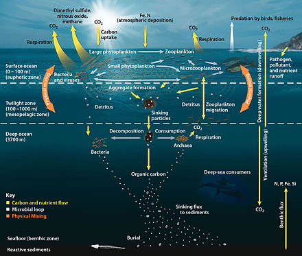

Human Impacts

Human Impacts
Marine debris, specifically in the plastic form, have been found in every ocean basin and have a wide range of impacts on the marine world.
One of the most critical issues is ingestion of plastic debris, specifically microplastics. Many mesopelagic fish species migrate to the surface waters to feast on their main prey species, zooplankton and phytoplankton, which are mixed with microplastics in the surface waters. Additionally, research has shown that even zooplankton are consuming the microplastics themselves. Mesopelagic fish play a key role in energy dynamics, meaning they provide food to a number of predators including birds, larger fish and marine mammals. The concentration of these plastics has the potential to increase, so more economically important species could become contaminated as well. Concentration of plastic debris in mesopelagic populations can vary depending on geographic location and the concentration of marine debris located there. In 2018, approximately 73% of approximately 200 fish sampled in the North Atlantic had consumed plastic.
The mesopelagic region plays an important role in the global carbon cycle, as it is the area where most of the surface organic matter is respired. Mesopelagic species also acquire carbon during their diel vertical migration to feed in surface waters, and they transport that carbon to the deep sea when they die. It is estimated that the mesopelagic cycles between 5 and 12 billion tons of carbon dioxide from the atmosphere per year, and until recently, this estimate was not included in many climate models. It is difficult to quantify the effects of climate change on the mesopelagic zone as a whole, as climate change does not have uniform impacts geographically. Research suggests that in warming waters, as long as there are adequate nutrients and food for fish, then mesopelagic biomass could actually increase due to higher trophic efficiency and increased temperature-driven metabolism. However, because ocean warming will not be uniform throughout the global mesopelagic zone, it is predicted that some areas may actually decrease in fish biomass, while others increase.
Learn more about the amazing, and weird creatures found here:
News Deeply - The Ocean’s ‘Twilight Zone’ Faces Fishing Threat